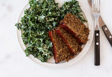
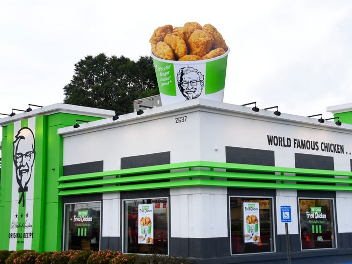

Eco-Warriors
Home
food
(current)
Mind
Body
Soul
Planet
People
Delicious and Ethical
Nutritious and Cheap
For Meatless Monday,
Month, Year
or Life
9 easy recipes for 100% plant-based dishes
Mac & Cheese
Cinnamon Rolls

Meatloaf
Smashed Potato Nachos
Keema Madras
Southwest Stew
Bolognese Pasta
Bean and Sweet Potato Quesadillas
Plant-Based Ramen
Classic Margherita Pizza
Disclaimer: KFC is technically not as they use the same fryers for chicken and plant-based chicken but worth trying.

Vegan KFS Store
Map to Vegan KFC in Atlanta
Disclaimer: KFC is technically not as they use the same fryers for chicken and plant-based chicken but worth trying.
Vegan KFS Store
Map to Vegan KFC in Atlanta
Disclaimer: KFC is technically not as they use the same fryers for chicken and plant-based chicken but worth trying.
Vegan KFS Store
Map to Vegan KFC in Atlanta
Disclaimer: KFC is technically not as they use the same fryers for chicken and plant-based chicken but worth trying.
Vegan KFS Store
Map to Vegan KFC in Atlanta
Disclaimer: KFC is technically not as they use the same fryers for chicken and plant-based chicken but worth trying.
Vegan KFS Store
Map to Vegan KFC in Atlanta
Disclaimer: KFC is technically not as they use the same fryers for chicken and plant-based chicken but worth trying.
Vegan KFS Store
Map to Vegan KFC in Atlanta